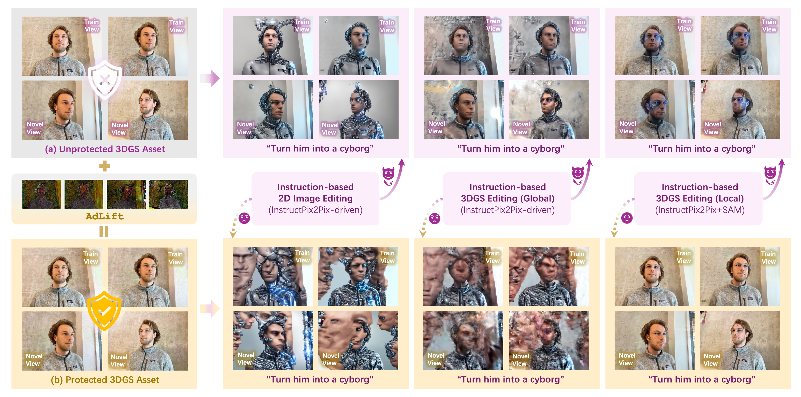

Abstract
Recent studies have extended diffusion-based instruction-driven 2D image editing pipelines to 3D Gaussian Splatting (3DGS), enabling faithful manipulation of 3DGS assets and greatly advancing 3DGS content creation. However, it also exposes these assets to serious risks of unauthorized editing and malicious tampering. Although imperceptible adversarial perturbations against diffusion models have proven effective for protecting 2D images, applying them to 3DGS encounters two major challenges: view-generalizable protection and balancing invisibility with protection capability. In this work, we propose the first editing safeguard for 3DGS, termed AdLift, which prevents instruction-driven editing across arbitrary views and dimensions by lifting strictly bounded 2D adversarial perturbations into 3D Gaussian-represented safeguard. To ensure both adversarial perturbations effectiveness and invisibility, these safeguard Gaussians are progressively optimized across training views using a tailored Lifted PGD, which first conducts gradient truncation during back-propagation from the editing model at the rendered image and applies projected gradients to strictly constrain the image-level perturbation. Then, the resulting perturbation is backpropagated to the safeguard Gaussian parameters via an image-to-Gaussian fitting operation. We alternate between gradient truncation and image-to-Gaussian fitting, yielding consistent adversarial-based protection performance across different viewpoints and generalizes to novel views. Empirically, qualitative and quantitative results demonstrate that AdLift effectively protects against state-of-the-art instruction-driven 2D image and 3DGS editing.
BibTeX
@article{hong2025adlift,
title = {AdLift: Lifting Adversarial Perturbations to Safeguard 3D Gaussian Splatting Assets Against Instruction-Driven Editing},
author = {Hong, Ziming and Huang, Tianyu and Chen, Runnan and Ye, Shanshan and Gong, Mingming and Han, Bo and Liu, Tongliang},
journal = {arXiv preprint arXiv:2512.07247},
year = {2025}
}